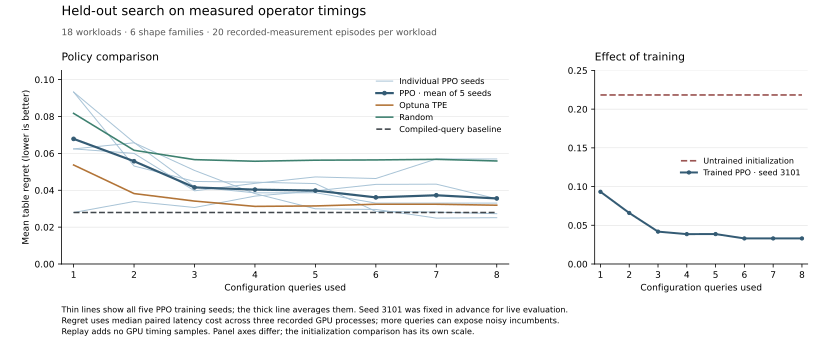
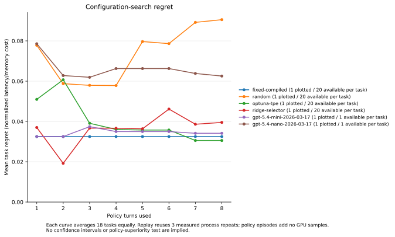
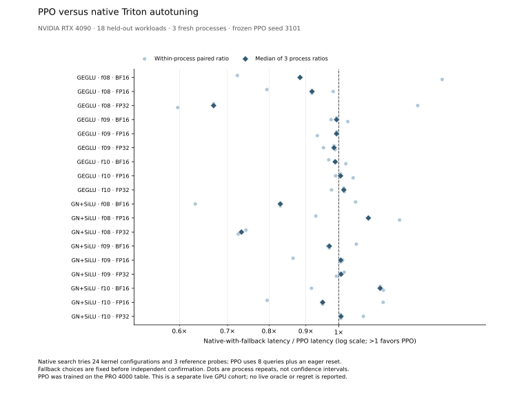
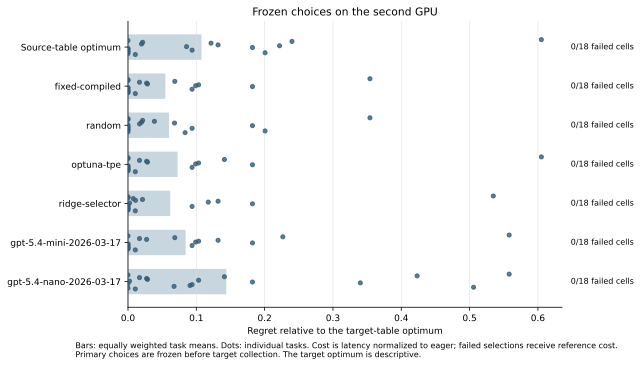

Public benchmark · Python · MIT license
GPU benchmark and agent tuning environment
Measure GPU execution costs, give a policy a fixed trial budget, and evaluate the configurations it selects. DriveBench provides measured operator data, a Gymnasium environment, and tools for collecting fresh GPU results.
- 60
- operator workloads
- 25
- candidate configurations
- 4,680
- GPU measurement records
- 18
- held-out test workloads
The benchmark
GEGLU and GroupNorm + SiLU on an NVIDIA RTX PRO 4000 Blackwell.
Tasks and configurations
Twenty tensor shapes are evaluated in float16, bfloat16 and float32. Every dtype of a shape stays in the same split: 30 training workloads, 12 validation workloads and 18 test workloads across six held-out shape families.
The action space contains compiled PyTorch and 24 Triton configurations: six block sizes, from 64 to 2048, with one, two, four or eight warps. Eager PyTorch supplies the reference.
Measurements and checks
Three fresh processes measure every workload and candidate, plus eager. Each of the 4,680 measurement records contains 30 timed invocations after five warmups, allocated-memory deltas, numerical correctness and the input, source and runtime identities.
Latency excludes compilation and warmup; preparation time is recorded separately. Candidates must match the eager output under dtype-specific tolerances, with finite outputs and unchanged inputs.
The dataset measures isolated operators on seeded tensors. The separate Vista integration supports full video-inference experiments; operator results do not establish video quality or end-to-end speedups.
The environment
Connect a search algorithm, a learned policy, or an LLM selector through the same evaluation interface.
- Observation
- Task features, queried outcomes, current incumbent and remaining budget.
- Action
- Select one of the 25 candidate configurations.
- Reward
- Improvement in the best valid normalized cost found so far.
- Episode
- Eight trials in this study. Repeated and rejected actions also spend a trial.
BudgetedTuningEnv
The Gymnasium reset()/step() API supports training and evaluation. Measured replay runs on CPU and returns recorded GPU observations with their original measurement IDs.
Live evaluators can collect new observations on a GPU. The AgentSession interface also exposes inspection, profiling, trials and final submission to tool-using agents.
The current actions are configurations. The published study trains PPO policies and a supervised cost-model selector; the LLM selectors are pretrained. Replay episodes reuse finite measurements and add no independent GPU samples.
Results
Equal eight-trial budgets on the 18 held-out workloads. Lower table regret is better.
The compiled-query baseline had the lowest mean regret in the 20-episode comparison.
This baseline begins with eager, queries compiled PyTorch on every turn, and retains the best observed valid configuration. Its final choice can therefore be eager. Random search, Optuna TPE, a ridge cost model and five PPO policies trained only on training workloads used the same budget.


| Policy | Regret |
|---|---|
| Compiled-query baseline | 0.027931 |
| Random | 0.055878 |
| Optuna TPE | 0.031880 |
| Train-only ridge | 0.031822 |
| PPO · five-seed mean | 0.035556 |
Regret is a normalized-cost difference, not a latency speedup. These results describe this finite table.
Training PPO on measured feedback
Five policies completed 102,400 training steps each on the 30 training workloads. Each checkpoint was then evaluated over 20 replay draws on every held-out workload. Mean final regret was 0.035556, compared with 0.031880 for TPE. The frozen untrained policy had mean regret 0.218278.
LLM selectors
GPT-5.4 mini and nano each ran one episode per test workload. Neither improved mean regret over the compiled-query baseline in the matched comparison. Mini repeated previously queried configurations on 116 of 144 turns; nano did so on 100 turns.
The original six-method comparison contains 1,476 episodes, with no rejected actions or failed queries. The dataset includes the trajectories, model snapshots and full comparison.
Fresh GPU confirmation
One modal choice per policy and test workload was frozen before confirmation. The 108 choices reduced to 42 distinct workload/configuration pairs. Three new processes measured each selection alongside eager and compiled references.
All 378 fresh measurements passed the numerical checks. Individual process ratios retain both faster and slower selections.

Matched one-episode comparison across all six policies

Live PPO and Triton autotuning
A frozen policy trained on RTX PRO 4000 measurements, evaluated with fresh feedback on an RTX 4090.
Reference fallbacks changed the outcome of the comparison.
Across 18 held-out workloads and three fresh processes, the native-kernel/PPO latency ratio was 1.089×. Allowing native search to retain eager or compiled PyTorch changed that ratio to 0.948×, favoring the fallback baseline. The compiled/PPO ratio was 1.039×.
PPO received eight queries and an eager reset. Native Triton autotuning searched 24 kernel configurations, followed by three reference probes. Selections were fixed before fresh confirmation; all 216 confirmation measurements passed the numerical checks.


Transfer across GPUs
The same 18 test workloads and configurations on an NVIDIA RTX 4090.
The source-table optimum remained optimal on 6 of 18 workloads.
Rankings of the 25 candidates on the RTX PRO 4000 and RTX 4090 had a mean per-workload Spearman correlation of 0.301. Transferring the source optimum, including the eager fallback, produced mean regret 0.107481 relative to the RTX 4090 table optimum.
The target table adds 1,404 measurement records from three fresh processes, using the same code and inputs. All passed the numerical checks. Policy choices were frozen before target measurement; no policy was retrained on the target GPU.


Use the benchmark
Replay the dataset without a GPU or model weights. Collect new measurements in a separate NVIDIA CUDA environment.
git clone https://github.com/rahul-mahadik/driving-world-model-inference.git
cd driving-world-model-inference
python3 -m venv .venv
. .venv/bin/activate
python -m pip install -e . -e './extensions/kernel_tuning[search]'
tar -xzf results/2026-11-23-operator-generalization-pro-4000/data.tar.gz -C resultsFit the ridge selector on training cells and evaluate all four CPU policies on the held-out workloads.
python -m drivebench_tuning.generalization_cli run \
--suite operator-generalization-v2 \
--table results/2026-11-23-operator-generalization-pro-4000/table.json \
--protocol protocols/operator-generalization-v2-compile-isolation-v1.json \
--output ./policy-comparisonOutputs include the fitted model, every policy trajectory, comparison statistics and frozen selections. Replay is explicitly identified in the records.
Replace the sampled action with your policy. This example uses actual recorded GPU measurements.
from drivebench_tuning.replay import MeasuredTable, MeasuredReplayEvaluator
from drivebench_tuning.search import BudgetedTuningEnv
table = MeasuredTable.load(
"results/2026-11-23-operator-generalization-pro-4000/table.json"
)
env = BudgetedTuningEnv(
table.suite.tasks, table.suite.candidates,
MeasuredReplayEvaluator(table, seed=2101),
trial_budget=8, memory_weight=0.0, allow_replay=True,
)
try:
env.action_space.seed(2101)
observation, info = env.reset(
seed=2101, options={"task_index": table.suite.splits["test"][0]}
)
for _ in range(8):
action = env.action_space.sample() # Your policy goes here.
observation, reward, terminated, truncated, info = env.step(action)
if terminated or truncated:
break
finally:
env.close()Collect one fresh-process repeat of the 60-workload suite. Use new output and compiler-cache directories and an external job deadline.
python -m pip install './extensions/kernel_tuning[gpu,search]'
export TORCHINDUCTOR_COMPILE_THREADS=1
export TORCHINDUCTOR_CACHE_DIR="$PWD/cache-0"
export TRITON_CACHE_DIR="$PWD/triton-cache-0"
timeout 1800s python -m drivebench_tuning.table_collection collect \
--suite operator-generalization-v2 --repeat-index 0 \
--output ./repeat-0Follow the collection recipe for all three repeats, table validation and independent confirmation.